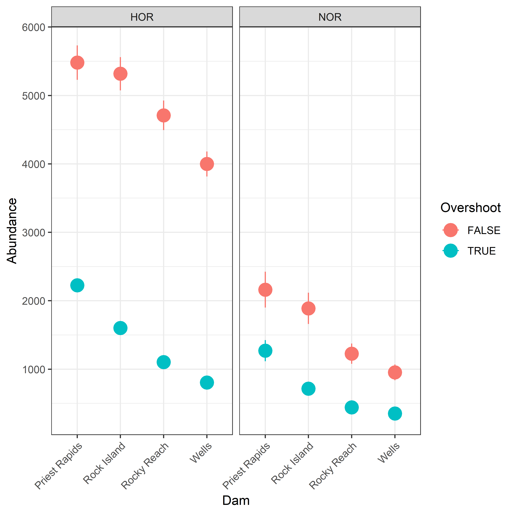
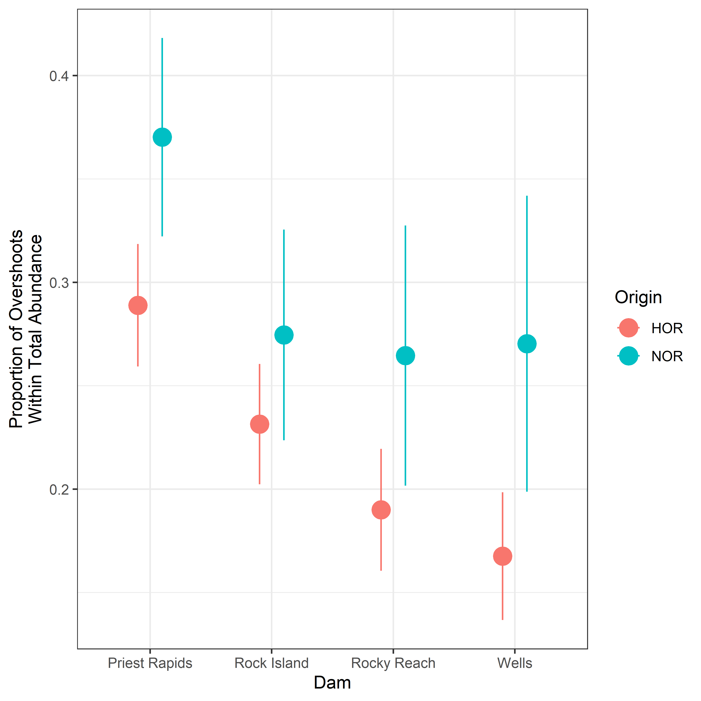
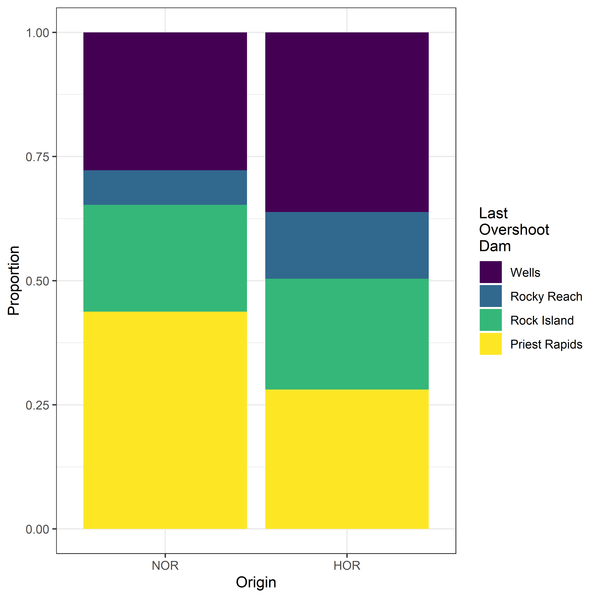

Overshoot | HOR | NOR | Total |
|---|---|---|---|
FALSE | 640 (71.1%) | 245 (63.0%) | 885 (68.7%) |
TRUE | 260 (28.9%) | 144 (37.0%) | 404 (31.3%) |
Total | 900 (100.0%) | 389 (100.0%) | 1,289 (100.0%) |
Steelhead Overshoot and Fallback Rates
Upper Columbia SY2025
Introduction and Objectives
WDFW has been trapping and PIT tagging hatchery and wild adult steelhead at Priest Rapids Dam and using the subsequent PIT tag detections to estimate escapement and abundance to various locations around the Upper Columbia since 2011 (Waterhouse et al. 2020). In spawn year 2025, CRITFC analyzed genetic samples of these fish and determined either the broodstock of hatchery-origin fish through parentage-based tagging (PBT), or genetic stock identification (GSI) for natural-origin fish. We used that information to look at movement patterns of fish who originated from outside the Upper Columbia basin.
Overshoots are defined as fish that move upstream, past their natal tributary, during their freshwater migration. Some of these overshoot fish may eventually fallback to their natal basin, while others may stray into an upstream basin, or perish somewhere in the mainstem. We initially focused on fish identified as out-of-basin fish (through PBT or GSI) that were detected at Priest Rapids Dam and could therefore be considered an overshoot into the Upper Columbia. For natural-origin fish, GSI cannot identify differences between Upper Columbia populations, only differences between Upper Columbia fish and those from outside the Upper Columbia, which does not allow us to examine any within-basin overshooting of natural origin steelhead (e.g., Wenatachee steelhead overshooting past Rocky Reach Dam). In this report, we examine several overshoot-related questions:
- What is the abundance of out-of-basin overshoot steelhead, by origin, at each of the Upper Columbia dams with PIT tag detection infrastructure (i.e. Priest Rapids, Rock Island, Rocky Reach and Wells)?
- Of those fish that overshoot past each dam in the Upper Columbia, what percentage are eventually detected downstream of Priest Rapids Dam (i.e., what percent fallback)?
- Of the hatchery fish from broodstock at Wells Hatchery or further upstream, where was their final detection, especially those fish that crossed Rocky Reach Dam?
- Of the fish from East Bank Hatchery broodstock, where was their final detection, especially those fish that crossed Rock Island Dam?
Data and Methods
In SY2025, 1,289 adult steelhead were PIT tagged or recaptured at Priest Rapids Dam (Table 1). As the trap at that location was run consistently throughout the run season, we consider these fish a random and representative sample of the run at large. Natural-origin fish were identified as non-Upper Columbia fish overshooting past Priest Rapids Dam if their GSI assignment was not UPPCOL. For hatchery-origin fish, if PBT identified a fish’s hatchery group as anything other than OmyEAST, OmyWELL, OmyWMET, OmyWOKA, OmyWOMA, or OmyWINT, including unassigned, they were considered an overshoot fish. Due to sample size limitations, we did not divide Upper Columbia overshoots into smaller groups (e.g., Snake River, or specific hatchery), but treated them as a homogeneous group in terms of their behavior within the Upper Columbia. Four fish failed to produce a PBT or GSI result, and were excluded from the analysis.
Analysis
We estimated abundance of overshoot fish at each mainstem dam by calculating the number of tags in our sample detected at, or upstream, of each dam, and then dividing that number of tags by the estimated tag rate at Priest Rapids Dam (Table 2). This tag rate was calculated by dividing teh known number of tags in our sample by an estimate of unique steelhead crossing Priest Rapids Dam. For the last several years, to estimate steelhead crossing Priest Rapids Dam we start with the window counts at Rock Island Dam, then accounting for re-ascending fish who were counted more than once by using PIT tags to estimate a re-ascension rate. By multiplying the total window counts by one minus the re-ascension rate we estimated the number of unique steelhead passing Rock Island Dam. We then estimated how many unique steelhead crossed Priest Rapids Dam by dividing the estimate at Rock Island Dam by the transition probability between Priest Rapids Dam and Rock Island, which comes out of the overall Upper Columbia steelhead escapement analysis, described by Waterhouse et al. (2020).
Year | Origin | Unique Sthd | Unique SE | N Tags | Tag Rate | Tag Rate SE |
|---|---|---|---|---|---|---|
2025 | HOR | 7,707 | 180.1 | 900 | 0.117 | 0.0027 |
2025 | NOR | 3,432 | 211.8 | 389 | 0.113 | 0.0070 |
Once we’d determined the furthest upstream dam each overshoot fish had crossed, we calculated what proportion of those fish (at each dam) had a detection somewhere below Priest Rapids Dam, and we assumed those fish had successfully fallen back. Because the GSI groups are fairly large spatially, we did not examine exactly what basin each fish’s last detection was in and compare that to their GSI (or PBT) designation. Such as analysis could be undertaken, but once the furthest upstream overshoot dam is also considered, the sample sizes of tags become quite small.
Wells and East Bank Hatchery Fish
We focused on two particular groups of hatchery fish from within the Upper Columbia: those from broodstock collected at or upstream of Wells Dam (PBT assignments of OmyWELL OmyWMET, OmyWINT, OmyWOKA or OmyWOMA) and those from broodstock at East Bank Hatchery (PBT assignment of OmyEAST). For broodstock from Wells Dam or upstream, we concentrated on those tags detected crossing Rocky Reach Dam, and examined their final upstream PIT tag detection. For fish from East Bank hatchery, we started with tags detected crossing Rock Island Dam and performed a similar analysis.
Results
Overshoot and Fallback
Table 3 summarizes the abundance, by origin, of adult steelhead that have overshot into the Upper Columbia according to the furthest upstream overshoot dam, as well as the number that fallback to a tributary below Priest Rapids Dam and that percentage of fallback. Table 4 provides a similar summary, but focused only on those natural-origin steelhead that originated from the Yakima River and were detected falling back into the Yakima.
Origin | Last Overshoot Dam | Overshoot | Fallback | Percent |
|---|---|---|---|---|
HOR | Priest Rapids | 625 (14.6) | 480 (32.9) | 76.7 |
Rock Island | 497 (11.6) | 154 (30.4) | 31.0 | |
Rocky Reach | 300 (7) | 77 (22.2) | 25.7 | |
Wells | 805 (18.8) | 60 (21.8) | 7.4 | |
Total | 2,226 (27.4) | 771 (54.6) | 34.6 | |
NOR | Priest Rapids | 556 (34.3) | 450 (39.1) | 81.0 |
Rock Island | 274 (16.9) | 97 (24.3) | 35.5 | |
Rocky Reach | 88 (5.4) | 18 (11.2) | 20.0 | |
Wells | 353 (21.8) | 26 (14.8) | 7.5 | |
Total | 1,271 (44.3) | 591 (49.7) | 46.5 |
Origin | Source Basin | Last Overshoot Dam | Overshoot | Fallback | Percent |
|---|---|---|---|---|---|
NOR | Yakima | Priest Rapids | 274 (16.9) | 245 (24.5) | 89.5 |
Rock Island | 106 (6.5) | 64 (23.6) | 60.0 | ||
Rocky Reach | 62 (3.8) | 21 (16.9) | 33.3 | ||
Wells | 35 (2.2) | 0 (0) | 0.0 | ||
Total | 476 (18.6) | 329 (38) | 69.0 |
Figure 1 displays estimates of steelhead abundance at four of the mainstem dams in the Upper Columbia River, separated by whether those fish are overshoots into the Upper Columbia or not. Figure 2 translates those estimates into the proportion of total abundance at each dam that is made up of overshooting fish. Figure 3 displays the proportions of how far upstream the steelhead overshooting into the Upper Columbia travel, by focusing on the furthest upstream dam at which each overshoot fish was detected and calculating the proportion of fish at each dam. Figure 4 depicts the percent of overshoot fish that fallback and are detected in a tributary downstream of Priest Rapids Dam, separated by origin and the furthest upstream dam they overshoot.




Wells Hatchery Fish
Of the 544 fish identified at Priest Rapids as coming from Wells Hatchery broodstock, 524 were detected passing Rocky Reach Dam. Table 5 shows where their final detection occurred, broken out by broodstock code identified by PBT. Focusing specifically on the two Wells Hatchery safety net stocks, Table 6 shows the furthest upstream detection sites and how many tags from each broodstock were detected there.
Final Detection | OmyWELL | OmyWMET | OmyWINT | OmyWOKA | OmyWOMA | Total |
|---|---|---|---|---|---|---|
Wells Pool | 127 (57.2%) | 68 (47.9%) | 24 (36.9%) | 23 (28.4%) | 5 (35.7%) | 247 (47.1%) |
Wells Hatchery | 59 (26.6%) | 7 (4.9%) | 2 (3.1%) | 2 (2.5%) | 0 (0.0%) | 70 (13.4%) |
Rocky Reach Dam | 2 (0.9%) | 3 (2.1%) | 4 (6.2%) | 2 (2.5%) | 0 (0.0%) | 11 (2.1%) |
Okanogan | 3 (1.4%) | 6 (4.2%) | 2 (3.1%) | 48 (59.3%) | 9 (64.3%) | 68 (13.0%) |
Methow | 18 (8.1%) | 56 (39.4%) | 33 (50.8%) | 1 (1.2%) | 0 (0.0%) | 108 (20.6%) |
Foster Creek | 1 (0.5%) | 1 (0.7%) | 0 (0.0%) | 2 (2.5%) | 0 (0.0%) | 4 (0.8%) |
Entiat | 5 (2.3%) | 0 (0.0%) | 0 (0.0%) | 0 (0.0%) | 0 (0.0%) | 5 (1.0%) |
East Bank Hatchery | 6 (2.7%) | 1 (0.7%) | 0 (0.0%) | 3 (3.7%) | 0 (0.0%) | 10 (1.9%) |
Below Priest | 1 (0.5%) | 0 (0.0%) | 0 (0.0%) | 0 (0.0%) | 0 (0.0%) | 1 (0.2%) |
Total | 222 (100.0%) | 142 (100.0%) | 65 (100.0%) | 81 (100.0%) | 14 (100.0%) | 524 (100.0%) |
Watershed | Site Name | RKM | Site Code | OmyWELL | OmyWMET |
|---|---|---|---|---|---|
Below Priest | Ringold Springs Hatch. Outfall | 567 | RSH | 1 (0.5%) | 0 (0%) |
Mainstem | Rocky Reach Fishway | 763 | RRF | 2 (0.9%) | 3 (2.1%) |
Mainstem | East Bank Hatchery Outfall | 764 | EBO | 6 (2.7%) | 1 (0.7%) |
Entiat | Lower Entiat River | 778.002 | ENL | 3 (1.4%) | 0 (0%) |
Entiat | Mad River, Entiat River Basin | 778.017.001 | MAD | 2 (0.9%) | 0 (0%) |
Mainstem | Wells Dam Hatchery | 829.001 | WEH | 59 (26.6%) | 7 (4.9%) |
Wells Pool | Wells Dam, DCPUD Adult Ladders | 830 | WEA | 127 (57.2%) | 68 (47.9%) |
Methow | Lower Methow River at Pateros | 843.008 | LMR | 9 (4.1%) | 27 (19%) |
Methow | Gold Creek, Methow River | 843.035.001 | GLC | 4 (1.8%) | 1 (0.7%) |
Methow | Libby Creek, Methow River | 843.042.001 | LBC | 1 (0.5%) | 3 (2.1%) |
Methow | Lower Methow | 843.008 | - | 14 (6.3%) | 31 (21.8%) |
Methow | Methow River at Carlton | 843.045 | MRC | 3 (1.4%) | 12 (8.5%) |
Methow | Beaver Creek, Methow River | 843.057.001 | BVC | 0 (0%) | 8 (5.6%) |
Methow | Middle Methow | 843.045 | - | 3 (1.4%) | 20 (14.1%) |
Methow | Chewuch River above Winthrop | 843.080.001 | CRW | 1 (0.5%) | 2 (1.4%) |
Methow | Spring Creek Acclimation Pond | 843.081 | SCP | 0 (0%) | 1 (0.7%) |
Methow | Methow River at Winthrop | 843.085 | MRW | 0 (0%) | 1 (0.7%) |
Methow | Wolf Creek, Methow River | 843.085.001 | WFC | 0 (0%) | 1 (0.7%) |
Methow | Upper Methow | 843.085 | - | 1 (0.5%) | 5 (3.5%) |
Okanogan | Lower Okanogan Instream Array | 858.025 | OKL | 2 (0.9%) | 1 (0.7%) |
Okanogan | Salmon Creek Above OID Div. | 858.041.009 | SAD | 0 (0%) | 1 (0.7%) |
Okanogan | Omak Creek Instream Array | 858.052.000 | OMK | 1 (0.5%) | 0 (0%) |
Okanogan | Johnson Creek | 858.066.001 | JOH | 0 (0%) | 1 (0.7%) |
Okanogan | Bonaparte Creek Instream Array | 858.092.001 | BPC | 0 (0%) | 1 (0.7%) |
Okanogan | Antoine Creek Instream Array | 858.099.000 | ANT | 0 (0%) | 1 (0.7%) |
Okanogan | Wildhorse Spring Creek | 858.114.001 | WHS | 0 (0%) | 1 (0.7%) |
Okanogan | Foster Creek | 868.001 | FST | 1 (0.5%) | 1 (0.7%) |
- | Total | - | - | 222 (100%) | 142 (100%) |
East Bank Hatchery Fish
Of the 96 fish identified at Priest Rapids as coming from East Bank Hatchery broodstock, 94 were detected passing Rock Island Dam. Table 7 shows where their final detection occurred.
Final Detection | N tags | Percent |
|---|---|---|
Wenatchee | 78 | 83.0% |
Wells Pool | 6 | 6.4% |
East Bank Hatchery | 2 | 2.1% |
Entiat | 2 | 2.1% |
Methow | 2 | 2.1% |
Rock Island Dam | 2 | 2.1% |
Foster Creek | 1 | 1.1% |
Rocky Reach Dam | 1 | 1.1% |
Total | 94 | 100.0% |
References
Waterhouse, L., J. White, K. See, A. Murdoch, and B. X. Semmens. 2020. A Bayesian nested patch occupancy model to estimate steelhead movement and abundance. Ecological Applications 30(8).